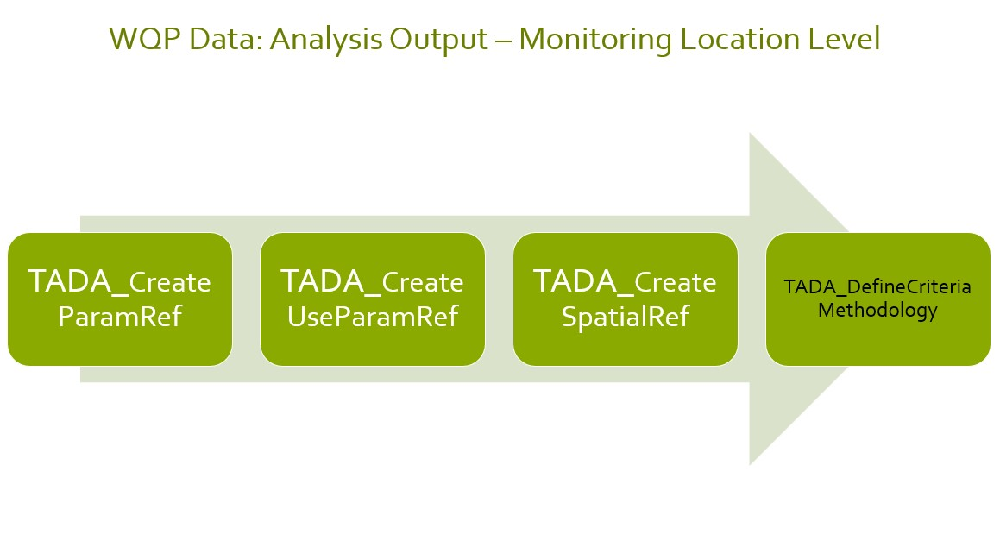
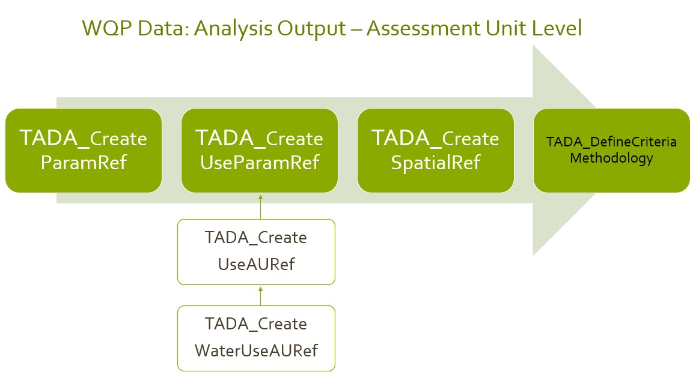

Example Module 3 Workflow
TADA Team
2026-08-27
Source:vignettes/ExampleMod3Workflow.Rmd
ExampleMod3Workflow.RmdWelcome!
Thank you for your interest in Tools for Automated Data Analysis (TADA). TADA is an open-source tool set built in the R programming language. The EPATADA R Package is still under development. New functionality is added weekly, and sometimes we need to make bug fixes in response to user feedback. We appreciate your feedback, patience, and interest in these helpful tools. If you are interested in contributing to TADA development, more information is available here. We welcome collaboration with external partners!
Install and Load the EPATADA R Package
First, install and load the remotes package specifying the repo. This is needed before installing EPATADA because it is only available on GitHub (not CRAN).
install.packages("remotes")
# Load the remotes library
library(remotes)Next, install and load TADA using the remotes package. TADA R Package dependencies will also be downloaded automatically from CRAN with the TADA install. You may be prompted in the console to update dependency packages that have more recent versions available. If you see this prompt, it is recommended to update all of them (enter 1 into the console).
remotes::install_github("USEPA/EPATADA",
ref = "develop",
dependencies = TRUE
)
remotes::install_github("USEPA/rExpertQuery")Finally, use the library() function to load the TADA R Package into your R session.
Help pages
All EPATADA R package functions have their own individual help pages,
listed in the Package index on the Reference
tab of the GitHub website. Users can also access the help page for a
given function in R or RStudio using the following format (example
below): ?[name of TADA function]
# Access help page for TADA_CreateAUMLCrosswalk
?TADA_CreateAUMLCrosswalkModule 3 Functions in TADA
Disclaimer: The EPATADA Module 3 functions were designed to: (1) assist users with associating Water Quality Portal monitoring locations with assessment units and designated uses from ATTAINS and (2) compare Water Quality Portal results with numeric water quality criteria. EPATADA functions do not constitute current EPA policy or regulatory requirements. Organizations may choose to use EPATADA as a a tool in their decision making processes. Use of EPATADA is not required.
Introduction to TADA Module 3
This RMarkdown document walks users through how to create WQP and ATTAINS crosswalks that are needed to define and capture organization specific water quality analysis criteria and methodologies. This is a continuation of an example TADA workflow which began with ExampleMod2Workflow.Rmd.
Specifically, this vignette provides an overview of three functions that can assist users with:
Creating a crosswalk (reference table) between ATTAINS parameter names, WQP/TADA characteristic names, and TADA comparable data identifiers.
Creating a crosswalk (reference table) of all unique combinations of ATTAINS uses and parameters applicable to your analysis needs.
Define and summarize your spatial level of analysis for uses and parameters to locations (monitoring locations or assessment units) and capture any unique site-specific WQS criteria.
These functions are designed to be flexible so users from states, tribes, or territories can input organization-specific information and link its information from ATTAINS. While TADA functions can help generate these crosswalks and fill in some values, users must review and modify the tables generated in each step to ensure accuracy. The TADA team has also incorporated national recommended Clean Water Act (CWA) EPA 304(a) numeric criteria for optional use in Module 3 functions that has been filled out and reviewed by the TADA team. This allows users to analyze their data against the EPA 304(a) criteria; and to easily compare results when when using EPA 304(a) criteria vs. their own state or tribe’s criteria.
Getting Started
First, we will load example reference tables (crosswalks) created for TADA workflow example purposes. These are (1) a ML to AU crosswalk and (2) a Uses to AU crosswalk. If you would like to learn how these reference tables were created, see the ExampleMod2Workflow vignette.
# import example data set, example AUML crosswalk and example uses to AU crosswalk.
# extract ATTAINS_crosswalk data frame from the list
utils::data(Data_MT_AUMLRef)
MT_AU_MLRef <- Data_MT_AUMLRef$ATTAINS_crosswalk
utils::data(Data_MT_AU_UsesRef)
MT_AU_UsesRef <- Data_MT_AU_UsesRefGet WQP Monitoring Data in Montana Using TADA_DataRetrieval()
Let’s start with an example data frame that has already been through the data cleaning, wrangling, harmonization, handling of censored data, removal of suspect results, and other important TADA Module 1 functions. This process should be completed by users before utilizing Module 2 or 3 functions, so we will go through some minimal cleaning with an example data set from Montana. Get bacteria and pH data from Missoula County, Montana.
# get MT data
tada.MT <- TADA_DataRetrieval(
startDate = "2020-01-01",
endDate = "2022-12-31",
statecode = "MT",
characteristicName = c(
"Escherichia",
"Escherichia coli",
"pH"
),
countycode = "Missoula County",
ask = FALSE
)
# clean up data set (minimal)
tada.MT.clean <- tada.MT |>
TADA_RunKeyFlagFunctions() |>
TADA_SimpleCensoredMethods() |>
TADA_HarmonizeSynonyms()
# remove intermediate objects
rm(tada.MT)This example data set can be loaded from the EPATADA package:
utils::data("Data_MT_MissoulaCounty", package = "EPATADA")
tada.MT.clean <- Data_MT_MissoulaCountyThis example will focus only on Montana. The remainder of this vignette will walk through how to fill out two crosswalk tables (TADA_ParametersForAnalysis and TADA_UsesForAnalysis) that are needed before we can start assigning applicable criteria and methodologies information for this specific ATTAINS organization (MTDEQ).
ATTAINS Domains and Allowable Values
A crosswalk between TADA characteristics and ATTAINS parameters is needed before we can integrate information from these two data sets. Before creating the TADA/WQP CharacteristicName and ATTAINS parameter crosswalk table (TADA_ParametersForAnalysis), let’s review all the unique TADA.ComparableDataIdentifiers (characteristic, fraction and speciation combinations) in the example data. How many results are available for each within the example data set?
# create table with counts of TADA.ComparableDataIdentifiers
TADA_FieldValuesTable(tada.MT.clean, field = "TADA.ComparableDataIdentifier")## Value Count
## 1 PH_NONE_NONE_NONE 280
## 2 ESCHERICHIA COLI_NONE_NONE_CFU/100ML 146In this vignette, we will crosswalk each of these TADA.ComparableDataIdentifiers to ATTAINS parameter names. ATTAINS has multiple domains, including the parameter names domain, that have allowable values. Using the R package rExpertQuery, which provides functions for downloading tidy data from the ATTAINS public web services (https://github.com/USEPA/rExpertQuery), we can review all ATTAINS domains (see example below).
# return ATTAINS parameter domain values
TADA_TableExport(rExpertQuery::EQ_DomainValues("param_name", api_key = rEQ_api))In the next section, we will review which parameters have been listed in ATTAINS in the past for a specific organization. In order to select a specific organization in the TADA_ParametersForAnalysis() function, we need to identify the organization id used in ATTAINS. The organization id for Montana is “MTDEQ”.
# return ATTAINS organization domain values
TADA_TableExport(rExpertQuery::EQ_DomainValues("org_id", api_key = rEQ_api))TADA_ParametersForAnalysis() Basics
ATTAINS Parameter Names are more general than the TADA Comparable Data Identifiers. Therefore, we recommend users provide a crosswalk between each TADA.ComparableDataIdentifier and ATTAINS.ParameterName. TADA_ParametersForAnalysis() creates a template which includes all TADA.ComparableDataIdentifiers from the TADA data frame and contains a blank column, “ATTAINS.ParameterName” for users to input the corresponding ATTAINS parameter name.
TADA_ParametersForAnalysis() includes an argument input ‘auto_assign’ to assist users in finding an alias name between TADA Characteristic Names to ATTAINS Parameter Name, if one is found. It is important to note that even with these exact matches, there are additional complexities related to fraction, speciation and units that may be unique to your organization. For example, some organizations may consider Total Nitrogen, Nitrate/Nitrite, and Ammonia all to match the ATTAINS parameter “Nitrogen”, while others may consider only some fraction/speciation combinations analogous to the ATTAINS parameter “Nitrogen”.
Setting “excel = TRUE” in TADA_ParametersForAnalysis tells the function to create an Excel spreadsheet of the reference table for review and editing. The excel output includes logic to help a user select ATTAINS parameter names that have been used in the past by the selected organization. If users do not want to work in Excel, they can use “excel = FALSE” to return a data frame. The data frame can be edited directly in R if desired, although there are no TADA-specific functions designed to facilitate this.
When using TADA_ParametersForAnalysis(), users should specify the organization(s) of interest in the “org_id” argument. This ensures that the correct number of rows will be created in the reference table. When “excel = TRUE”, specifying the organization(s) also creates a separate tab in the Excel file which contains the parameter names used in prior assessment cycles by the specified ATTAINS organization(s). This will allow users to decide whether to continue to use the same ATTAINS parameter names from prior assessments that their organizations(s) have used in the past, or to use other valid parameter names from the entire ATTAINS domain list.
Keep in mind that only parameter names previously entered in ATTAINS by the selected organization(s) will be returned. Many organization only input parameters that are causes in ATTAINS. This means that TADA_ParametersForAnalysis() may not return all parameters required by an organization’s assessment methodology if some parameters have never been listed as a cause. If there is not a suitable ATTAINS parameter name to match a TADA.ComparableDataIdentifier, users should contact the ATTAINS team (attains@epa.gov) for assistance.
For our first example, we will specify Montana’s organization identifier (“MTDEQ”) as our ATTAINS organization identifier of interest. By default, auto_assign = “None” which will not populate any entries for the ATTAINS.ParameterName column, and users will need to manually fill this crosswalk out.
# create TADA parameter reference table for specified organization
MT.ParamRef.None <- TADA_ParametersForAnalysis(
tada.MT.clean,
org_id = c("MTDEQ"),
auto_assign = "None",
excel = FALSE
# uncomment to run the excel file
# excel = TRUE, overwrite = TRUE
)
TADA_TableExport(MT.ParamRef.None)Auto_assign Options
Now, let’s see what happens we we use auto_assign = ‘All’ to autopopulate characteristic alias matches. The auto assignment will create exact matches based on the entire list of allowable ATTAINS parameters. This means that parameter names your organization has not previously record in ATTAINS may be included in the assignments.
# create TADA parameter reference table for specified organization
MT.ParamRef.All <- TADA_ParametersForAnalysis(
tada.MT.clean,
org_id = c("MTDEQ"),
auto_assign = "All",
excel = FALSE
# excel = TRUE, overwrite = TRUE
)
TADA_TableExport(MT.ParamRef.All)Another option is to set auto_assign = ‘Org’. This limits the characteristic alias matches to return only ATTAINS.ParameterNames that an organization has used in the past.
# create TADA parameter reference table for specified organization
MT.ParamRef.Org <- TADA_ParametersForAnalysis(
tada.MT.clean,
org_id = c("MTDEQ"),
auto_assign = "Org",
excel = FALSE
# uncomment excel = TRUE, overwrite = TRUE to run the excel file
# excel = TRUE, overwrite = TRUE
)
TADA_TableExport(MT.ParamRef.Org)Manual Parameter Crosswalk
The code chunk below demonstrates how the parameter reference table can be modified in R.
# only run the code chunks below if you make edits to the excel file. Please note you must open and save the excel file at least once to reflect all Excel formula based values.
# downloads_path <- file.path(Sys.getenv("USERPROFILE"), "Downloads", "myfileRef.xlsx")
# ParamRef <- openxlsx::read.xlsx(downloads_path, sheet = "CreateParamRef")
# MT.ParamRef_Excel <- TADA_ParametersForAnalysis(
# Data_NCTC,
# org_id = c("MTDEQ"),
# paramRef = ParamRef,
# excel = TRUE, overwrite = TRUE
# )
MT.ParamRef.manual <- MT.ParamRef.None |>
dplyr::mutate(ATTAINS.ParameterName = dplyr::case_when(
grepl("PH_NONE_NONE_NONE", TADA.ComparableDataIdentifier) ~ "PH",
grepl("ESCHERICHIA COLI", TADA.ComparableDataIdentifier) ~ "ESCHERICHIA COLI (E. COLI)"
)) |>
dplyr::bind_rows(data.frame(TADA.ComparableDataIdentifier = "PH_NONE_NONE_NONE", ATTAINS.ParameterName = "PH, HIGH", ATTAINS.OrganizationIdentifier = "MTDEQ"))
TADA_TableExport(MT.ParamRef.manual)Provide a User Supplied paramRef
Once modifications are complete, we can re-run TADA_ParametersForAnalysis using the modified parameter reference table as the input for “paramRef”. This will update the ATTAINS.FlagParameterName column in the parameter reference table (see example below). This column provides information about whether or not the organization specified in the “ATTAINS.OrganizationIdentifier” column has listed this parameter as a cause in prior assessment cycles. It also flags rows where the TADA.ComparableDataIdentifier as not been assigned an ATTAINS parameter name.
MT.ParamRef.user.supplied <- TADA_ParametersForAnalysis(
tada.MT.clean,
org_id = c("MTDEQ"),
paramRef = MT.ParamRef.manual,
excel = FALSE
# uncomment excel = TRUE, overwrite = TRUE to run the excel file
# excel = TRUE, overwrite = TRUE
)
TADA_TableExport(MT.ParamRef.user.supplied)Review, Save and Re-Use paramRef
Once the parameter reference table has been reviewed and modified, it can be saved and reused for analysis of future TADA data frames. This process is useful to help identify if new WQP characteristics (or new fraction/speciations) are being queried in your most up to date WQP query and to allow you to review how to handle these new additions.
If new WQP characteristics (or new fraction/speciations) do show up, your user supplied ‘paramRef’ is prioritized over the ‘auto_assign’ argument inputs. The auto_assign option will allow you to fill in any remaining blank ATTAINS.ParameterName that you have not filled in but will not replace any cross walk that you have defined in your user supplied crosswalk. In our case, since each unique TADA.ComparableDataIdentifier was cross walked to an ATTAINS.ParameterName in the user supplied ’MT.ParamRef_user_supplied, this table will be the same.
MT.ParamRef.Final <- TADA_ParametersForAnalysis(
tada.MT.clean,
org_id = c("MTDEQ"),
paramRef = MT.ParamRef.user.supplied,
auto_assign = "All",
excel = FALSE
# uncomment excel = TRUE, overwrite = TRUE to run the excel file
# excel = TRUE, overwrite = TRUE
)
# Test if the two data frames are same or not.
identical(MT.ParamRef.Final[1:4], MT.ParamRef.user.supplied[1:4])## [1] TRUE
TADA_TableExport(MT.ParamRef.Final)Remove intermediate variable, we will keep only the crosswalk tables that are relevant for the remaining workflow.
rm(MT.ParamRef.All, MT.ParamRef.manual, MT.ParamRef.None, MT.ParamRef.Org, MT.ParamRef.user.supplied)TADA_UsesForAnalysis() Basics
Users will review the output of this function and select which ATTAINS.UseName(s) and associated ATTAINS.ParameterName(s), for your specified ATTAINS organization(s), are applicable for analysis. Later in the analysis process, users will define the criteria and methodologies that are applicable to each ATTAINS use name and parameter name marked as “Include.” If an ATTAINS.UseName is not applicable for that given ATTAINS.ParameterName, select “Exclude.” Deleting the row is allowed, but we recommend labeling it as “Exclude” to document that it has been reviewed. If an ATTAINS.UseName needs to be added for an ATTAINS.ParameterName, append an additional row to capture this.
For any remaining ATTAINS parameter name(s) that are not included by an organization in prior assessment cycles, they will not have any associated prior use names. In this case, users must manually assign the appropriate ATTAINS.UseName under the column ‘ATTAINS.UseName’. They may need to add additional rows if the parameter applies to multiples uses. Alternatively, users can choose to use the ‘auto_assign’ to assign all unique ATTAINS.UseName by ATTAINS.OrganizationName to any ATTAINS.ParameterName missing a use name associated with it.
We will start off with the simple use case in which TADA users can run this function with just the TADA dataframe, paramRef input and org_id input.
Manual assignment of new ATTAINS parameter names to ATTAINS use names
In the example below, we can see “PH” and “ESCHERICHIA COLI (E. COLI)” as the ATTAINS.ParameterNames that were assessed in prior assessment cycles for MTDEQ (see ATTAINS.FlagUseName column in NCTC_usesRef). “PH, HIGH” was not listed in ATTAINS for MTDEQ in the prior assessment cycle, but was included as a parameter name MTDEQ would like to assess for in this current assessment cycle. Thus, the ATTAINS.UseName is left blank for “PH, HIGH”.
MT.UsesRef.manual <- TADA_UsesForAnalysis(
tada.MT.clean,
org_id = c("MTDEQ"),
paramRef = MT.ParamRef.Final,
usesRef = NULL,
AU_UsesRef = NULL,
AUMLRef = NULL,
auto_assign = FALSE,
excel = FALSE
# uncomment excel = TRUE, overwrite = TRUE to run the excel file
# excel = TRUE, overwrite = TRUE
)
TADA_TableExport(MT.UsesRef.manual)If desired, a user can manually assign “PH, HIGH” to any applicable uses (disclaimer: this is for demonstration purposes only and does not reflect MTDEQ’s criteria and assessment process).
add.data <- data.frame(
"ATTAINS.OrganizationIdentifier" = "MTDEQ",
"ATTAINS.ParameterName" = rep("PH, HIGH", 2),
"ATTAINS.UseName" = c(
"Aquatic Life",
"Agriculture"
)
)
UsesRef <- MT.UsesRef.manual |>
dplyr::left_join(add.data, by = c("ATTAINS.OrganizationIdentifier", "ATTAINS.ParameterName"), keep = FALSE) |>
dplyr::mutate(ATTAINS.UseName = dplyr::coalesce(ATTAINS.UseName.x, ATTAINS.UseName.y)) |>
dplyr::select(-c(ATTAINS.UseName.x, ATTAINS.UseName.y)) |>
dplyr::mutate(IncludeOrExclude = "Include")The output of UsesRef will not reflect changes to the ATTAINS.FlagUseName column. To do so, we need to re run TADA_UsesForAnalysis() with usesRef = add_data as an argument input.
# PH will now reflect the changes
MT.UsesRef.manual.Update <- TADA_UsesForAnalysis(
tada.MT.clean,
org_id = c("MTDEQ"),
paramRef = MT.ParamRef.Final,
usesRef = UsesRef, # Edits were made to usesRef, updates flag column
AU_UsesRef = NULL,
AUMLRef = NULL,
auto_assign = FALSE,
excel = FALSE
# uncomment excel = TRUE, overwrite = TRUE to run the excel file
# excel = TRUE, overwrite = TRUE
)
TADA_TableExport(MT.UsesRef.manual.Update)Auto_assign assignment of new ATTAINS parameter names to ATTAINS use names
Alternatively, we can choose to assign all unique use names that was submitted in prior ATTAINS assessment cycles, by your organization to those ATTAINS.ParameterName without any associated ATTAINS.UseName. Users will need to review this assignment carefully, choose include or exclude appropriately, and include additional rows as needed if there are more ATTAINS.UseName applicable for that ATTAINS.ParameterName that was not captured by the auto_assign method.
MT.UsesRef.auto <- TADA_UsesForAnalysis(
tada.MT.clean,
org_id = c("MTDEQ"),
paramRef = MT.ParamRef.Final,
usesRef = NULL,
AU_UsesRef = NULL,
AUMLRef = NULL,
auto_assign = TRUE, # specifies auto_assign to those ATTAINS.ParameterName without any associated ATTAINS.UseName
excel = FALSE
# uncomment excel = TRUE, overwrite = TRUE to run the excel file
# excel = TRUE, overwrite = TRUE
)
TADA_TableExport(MT.UsesRef.auto)
Advanced: Deep Dive into
TADA_UsesForAnalysis()
Users may have their own set of use names to associate with parameter names or may have completed an AU to uses crosswalk in prior TADA workflow. We will go through an in-depth use case and go through four options to help users with associating use names with parameter names which are prioritized as follows:
-
User supplied usesRef An optional crosswalk. This will contain the completed crosswalk for ATTAINS.UseName(s) that are associated with ATTAINS.ParameterName(s).
All uses and parameters in this crosswalk will be returned in the output. No rows are removed.
For any parameters in your paramRef (required input) that could not be cross walked to a use name, if auto_assign = FALSE then the ATTAINS.UseName value will be left blank. If auto_assign = TRUE, then all unique use names from either your AU_UsesRef or from prior ATTAINS assessment cycles will be returned (see option 2 and 4 below).
-
User supplied AU_UsesRef An optional crosswalk. This user supplied table will contain the most up-to-date use names by assessment unit determined by the TADA user. Users can filter down the water types or assessment units of interest in this crosswalk.
For any use names already present in ATTAINS, only those prior parameter and use combinations will be returned from prior assessment cycles filtered by any water types found in this reference table.
If AU_UsesRef includes modified or new use names (i.e., not currently found in ATTAINS), TADA attempts to join those new use name by water type to prior assessment cycles for your org. Next, it will associate and return those parameters with the new use names found in your reference table by those water types.
For any parameters in your paramRef (required input) that could not be cross walked to a use name, if auto_assign = FALSE then the ATTAINS.UseName value will be left blank. If auto_assign = TRUE, then all unique use names found in your AU_UsesRef will be assigned to that ATTAINS.ParameterName.
-
User supplied AUMLRef An optional crosswalk.
If users do not provide an AU_UsesRef input along with this crosswalk, TADA will run
TADA_AssignUsesToAU()and assign uses to those AU with default values from ATTAINS. In this scenario all uses will come from prior ATTAINS assessments, filtered by the use names associated with these assessment unit’s water types.If users provide both an AU_UsesRef and an AUMLRef, this function will filter the AU_UsesRef by the AUs found in the AUMLRef.
The output of this function will then run similarly to option 2 using the AU_UsesRef that has been modified accordingly from above.
From Prior ATTAINS assessment cycles: Pulls in all prior ATTAINS use names that have been associated with any parameter names (ATTAINS.ParameterName) found in your paramRef crosswalk for the specified ATTAINS organization. Data is retrieved from prior ATTAINS assessment cycles via ATTAINS ExpertQuery web services. This is the same as the basic use case under ‘TADA_UsesForAnalysis() Basics’ section of this vignette.
Option 1: User supplied usesRef
Users can choose to supply their own UsesRef as an argument input. Users who have gone through the workflow of reviewing a parameters to uses crosswalk can save this file and reuse it by supplying it as a usesRef input. If your organization has made significant changes to the names of the uses in the current cycle (cannot be retrieved from the prior ATTAINS assessment cycle) or if there are just additional use names that were unable to be retrieved from the prior assessment cycle, users can provide these updates here.
(Note: TADA functions leverages the ATTAINS assessment profiles which will not reflect any submitted use name changes to ATTAINS until the next assessment cycle is approved. In addition, it may not be possible to retrieve every use and parameter name combination from ATTAINS as it is dependent on what information each organization has submitted to ATTAINS.)
In this example, let’s use a filled out criteria table for MTDEQ and
extract the use and parameters from the crosswalk. TADA has created the
TADACommunityHub in which TADA users can submit, share and maintain
user-contributed criteria and methodologies templates to support
reproducible and efficient analyses. We will use
TADA_GetCriteriaFile to pull in this
criteria table from the TADACommunityHub GitHub repository.
We can see that MTDEQ has additional rows of uses associated with E. Coli that was unable to be retrieved from ATTAINS. We also see PH was not found in the user supplied UsesRef table. We will assume MTDEQ has forgotten to include PH in their table and showcase the importance of considering all readily available data from your WQP data retrieval that you may need to consider for analysis.
# Load the example MTDEQ criteria table
criteria_table <- TADA_GetCriteriaFile(org_id = "MTDEQ")
# extract the parameter and uses from this table
user.supplied.MT.data <- dplyr::select(criteria_table, ATTAINS.OrganizationIdentifier, TADA.ComparableDataIdentifier, TADA.CharacteristicName, ATTAINS.ParameterName, ATTAINS.UseName)
# run TADA_UsesForAnalysis and filter the table to ATTAINS.ParameterName(s) found in your paramRef arg input.
MT.UsesRef.manual.user.supplied <- TADA_UsesForAnalysis(
tada.MT.clean,
org_id = c("MTDEQ"),
paramRef = MT.ParamRef.Final,
usesRef = user.supplied.MT.data,
AU_UsesRef = NULL,
AUMLRef = NULL,
auto_assign = FALSE,
excel = FALSE
# uncomment excel = TRUE, overwrite = TRUE to run the excel file
# excel = TRUE, overwrite = TRUE
)
TADA_TableExport(MT.UsesRef.manual.user.supplied)Option 2: User has completed a Uses to AU crosswalk
Now, if you’ve assigned uses to AUs (see ExampleMod2Workflow.Rmd), pass that table as the AU_UsesRef. In this scenario, use names for your analysis will be populated from your defined uses in AU_UsesRef rather than prior ATTAINS cycles (Note: if all use names defined in your AU_UsesRef come from prior use names in ATTAINS then it will be still come from ATTAINS as the source.)
If your AU_UsesRef contains any use name not currently found in ATTAINS for your defined org_id(s) then this use name will get assigned to each unique ATTAINS.ParameterName. For use names that are already found in ATTAINS, the associated ATTAINS.ParameterName will be filtered if they are only associated with certain ATTAINS.UseName in prior assessment cycles.
Note: In the MT.UsesRef.auto example, all use names are found in prior ATTAINS assessment cycles for MTDEQ, so the tables should be identical to MT.UsesRef.with.AU_UsesRef.
# uses will come from the user supplied reference table produced in ExampleMod2Workflow.Rmd
utils::data(Data_MT_AU_UsesRef)
MT.UsesRef.manual.AU_UsesRef <- TADA_UsesForAnalysis(
tada.MT.clean,
org_id = c("MTDEQ"),
paramRef = MT.ParamRef.Final,
usesRef = NULL,
AU_UsesRef = Data_MT_AU_UsesRef, # uses will be sourced here
AUMLRef = NULL,
auto_assign = FALSE,
excel = FALSE
# excel = TRUE, overwrite = TRUE
)
TADA_TableExport(MT.UsesRef.manual.AU_UsesRef)Now, lets show the output when we turn auto_assign = TRUE
MT.UsesRef.auto.AU_UsesRef <- TADA_UsesForAnalysis(
tada.MT.clean,
org_id = c("MTDEQ"),
paramRef = MT.ParamRef.Final,
usesRef = NULL,
AU_UsesRef = Data_MT_AU_UsesRef, # uses will be sourced here.
AUMLRef = NULL,
auto_assign = TRUE, # turn auto_assign on
excel = FALSE
# excel = TRUE, overwrite = TRUE
)
TADA_TableExport(MT.UsesRef.auto.AU_UsesRef)Option 3A: User has completed an AU to ML crosswalk but not AU to Uses
While it is recommended for users who have created an AU to ML
crosswalk to run TADA_AssignUsesToAU to
create the AU_UsesRef crosswalk, it is not a requirement to do so. In
this scenario users can provide the AUMLRef crosswalk to filter only use
names that may be associated with those assessment units in your data
frame of interest.
Let’s go ahead and pull in our AUMLRef crosswalk created in
TADAModule2.Rmd vignette. We will compare the output of
TADA_UsesForAnalysis for assessment units
for MTDEQ for the case in which water type is ‘LAKE, FRESHWATER’ versus
‘RIVER’.
# This AUMLRef will come from the user supplied reference table produced in TADAModule2.Rmd
utils::data(Data_MT_AUMLRef)
AUMLRef.MT <- Data_MT_AUMLRef$ATTAINS_crosswalk
# pulls in a single assessment unit that is a lake
AUMLRef.MT76F007_010 <- dplyr::filter(AUMLRef.MT, ATTAINS.AssessmentUnitIdentifier == "MT76F007_010")
# pulls in a single assessment unit that is a river
AUMLRef.MT76M004_070 <- dplyr::filter(AUMLRef.MT, ATTAINS.AssessmentUnitIdentifier == "MT76M004_070")Now, let’s compare the assignments of uses and parameters in these two scenarios.
Question: What differences do we see between the two outputs for ‘LAKE, FRESHWATER’ versus ‘RIVER’?
MT.UsesRef.manual.MT76F007_010 <- TADA_UsesForAnalysis(
tada.MT.clean,
org_id = c("MTDEQ"),
paramRef = MT.ParamRef.Final,
usesRef = NULL,
AU_UsesRef = NULL,
AUMLRef = AUMLRef.MT76F007_010, # select appropriate crosswalk
auto_assign = FALSE,
excel = FALSE
# excel = TRUE, overwrite = TRUE
)
TADA_TableExport(MT.UsesRef.manual.MT76F007_010)
MT.UsesRef.manual.MT76M004_070 <- TADA_UsesForAnalysis(
tada.MT.clean,
org_id = c("MTDEQ"),
paramRef = MT.ParamRef.Final,
usesRef = NULL,
AU_UsesRef = NULL,
AUMLRef = AUMLRef.MT76M004_070, # select appropriate crosswalk
auto_assign = FALSE,
excel = FALSE
# excel = TRUE, overwrite = TRUE
)
TADA_TableExport(MT.UsesRef.manual.MT76M004_070)What do we see with auto_assign for this lake assessment unit?
MT.UsesRef.auto.MT76F007_010 <- TADA_UsesForAnalysis(
tada.MT.clean,
org_id = c("MTDEQ"),
paramRef = MT.ParamRef.Final,
usesRef = NULL,
AU_UsesRef = NULL,
AUMLRef = AUMLRef.MT76F007_010, # select appropriate crosswalk
auto_assign = TRUE,
excel = FALSE
# excel = TRUE, overwrite = TRUE
)
TADA_TableExport(MT.UsesRef.auto.MT76F007_010)Option 3B: Both AUMLRef and AU_UsesRef are provided
Now let’s supply both an AUMLRef and an AU_UsesRef. We will use the filtered AUMLRef as our input along with the full AU_UsesRef defined earlier.
MT.UsesRef.manual.3B <- TADA_UsesForAnalysis(
tada.MT.clean,
org_id = c("MTDEQ"),
paramRef = MT.ParamRef.Final,
usesRef = NULL,
AU_UsesRef = Data_MT_AU_UsesRef, # define AU_UsesRef
AUMLRef = AUMLRef.MT76F007_010, # select appropriate crosswalk
auto_assign = FALSE,
excel = FALSE
# excel = TRUE, overwrite = TRUE
)
TADA_TableExport(MT.UsesRef.manual.3B)Review, Save and Re-Use usesRef
Once the uses to parameter reference table has been reviewed and modified, it can be saved and reused for analysis of future TADA data frames. This process is useful to help identify if any new WQP characteristics (or new fraction/speciations) are being queried in your most up to date WQP query and to allow you to review how to handle assigning ATTAINS uses to these new additions.
If new WQP characteristics (or new fraction/speciations) do show up, your user supplied ‘usesRef’ is prioritized in the ‘auto_assign’ argument inputs. Thus, the auto_assign option will allow you to fill in any remaining blank ATTAINS.UseName to an ATTAINS.ParameterName that you have not filled in but will not replace any cross walk that you have defined in your user supplied crosswalk.
MT.UsesRef.Final <- TADA_UsesForAnalysis(
tada.MT.clean,
org_id = c("MTDEQ"),
paramRef = MT.ParamRef.Final,
usesRef = MT.UsesRef.manual.user.supplied,
AU_UsesRef = NULL,
AUMLRef = NULL,
auto_assign = TRUE,
excel = FALSE
# uncomment excel = TRUE, overwrite = TRUE to run the excel file
# excel = TRUE, overwrite = TRUE
)
# Test if the two data frames are same or not.
identical(MT.UsesRef.Final[, 1:5], MT.UsesRef.manual.user.supplied[, 1:5])## [1] TRUE
TADA_TableExport(MT.UsesRef.Final)remove intermediate variable, keep only the crosswalk table that we will continue to use in the workflow.
rm(MT.UsesRef.auto, user.supplied.MT.data, MT.UsesRef.manual, MT.UsesRef.manual.Update)TADA_MLSummary(): Create and Define Spatial Reference Tables
We can define your WQP data set on either an assessment unit level summary or monitoring location sites level. Please refer to EPATADA Module 2 for more information on the geospatial functions to assist with assessment unit and monitoring location overlay.
The general workflow of running module 3 functions for CWA water quality data analysis is shown below.


Define Spatial Summary by Monitoring Location (ML)
Let’s start off with a ML summary of MTDEQ data frame. By default, we will only display rows for parameters and uses for a ML if it contains data collected for that TADA.CharacteristicName in your WQP data query. If you would like to display all information even for sites with no WQP data, please choose displayNA = TRUE
MT.MLSummaryRef.ML <- TADA_MLSummary(
.data = tada.MT.clean,
usesRef = MT.UsesRef.Final,
org_id = "MTDEQ",
displayNA = TRUE,
excel = FALSE
# excel = TRUE, overwrite = TRUE
)
TADA_TableExport(MT.MLSummaryRef.ML)Define Spatial Summary by Monitoring Location (AU)
Now let’s compare this to the AU level of summary. To provide the ML to AU level of summary, this requires an AUML crosswalk and an AU_UsesRef, we recommend you to review the ExampleMod2Workflow vignette for more in depth information on this crosswalk. We will load these example reference tables into this vignette.
We now have all assignments of ATTAINS Uses, ATTAINS Parameters, and WQP Monitoring Location Sites to each AU defined. Users can do a final review to ensure all assignments are correct.
Note: By default, we will only display rows for parameters and uses for a ML if it contains data collected for that TADA.CharacteristicName in your WQP data query. If you would like to display all information even for sites with no WQP data, please choose displayNA = TRUE
# Load the dataset
utils::data("Data_MT_AU_UsesRef_Water", package = "EPATADA")
MT.MLSummaryRef.AU <- TADA_MLSummary(
.data = tada.MT.clean,
usesRef = MT.UsesRef.Final,
AU_UsesRef = Data_MT_AU_UsesRef_Water, # uses will come from the user supplied reference table produced in ExampleMod2Workflow.Rmd
AUMLRef = MT_AU_MLRef,
org_id = "MTDEQ",
displayNA = FALSE,
excel = FALSE
# excel = TRUE, overwrite = TRUE
)
TADA_TableExport(MT.MLSummaryRef.AU)Assign site-specific spatial criteria
We can apply any unique spatial criteria on a monitoring location sites level. This view allows us to determine whether there are certain sites that needs a unique site-specific criteria, certain water types, or certain combination of characteristics that have site-specific criteria. Let’s go through an example of how a user may modify this table.
MT.MLSummaryRef.AU2 <- MT.MLSummaryRef.AU |>
dplyr::mutate(
UniqueSpatialCriteria = dplyr::case_when(
MonitoringLocationIdentifier == "MTVOLWQM_WQX-CLEARWATERR_1" ~ "Example Site Specific"
)
)
TADA_TableExport(MT.MLSummaryRef.AU2)Compare the nrow for each of the ML versus AU level of summary. The AU level of summary is further filtered down by the AU to ML crosswalk, the use to AU crosswalk, and the use to parameter crosswalk based on what TADA.ComparableDataIdentifier has been collected at those sites and taking into consideration of what parameter(s) and use(s) have been assessed for each assessment unit. (Note: Would users find it useful to still include a parameter and use for a site even if the site does not contain that TADA.ComparableDataIdentifier - the ATTAINS.ParameterName? This could be included in the final summary table and labeled as NA or insufficient data.)
TADA DefineCriteriaMethodology()
Now, lets get to generating the criteria and methodology file for MTDEQ to fill out. We will showcase how this table will be generated for the first time using the recommended step-by-step workflow and showcase how a user can go about updating their criteria and methodology file as needed.
First, let’s show how our step-by-step process all come together. Users will need to fill out this template that is generated. It is highly recommended to export this to the excel spreadsheet to show the allowable values and easy interface for inputs to the table.
MT.CriteriaMethods <- TADA_DefineCriteriaMethodology(
.data = tada.MT.clean,
org_id = "MTDEQ",
MLSummaryRef = MT.MLSummaryRef.ML,
excel = FALSE
# excel = TRUE, overwrite = TRUE
)
# Export the criteria methodology table from the list of data frames
TADA_TableExport(MT.CriteriaMethods[[1]])
# Export the data dictionary table from the list of data frames
TADA_TableExport(MT.CriteriaMethods[[2]])
# Export the allowable values table from the list of data frames
TADA_TableExport(MT.CriteriaMethods[[3]])
# or set excel = T in the TADA_DefineCriteriaMethodology() function to export a single excel file with each data frame as a sheet to the downloads folder automaticallyNow, if MTDEQ, already has a filled out/partially filled out criteria methods table, let’s provide this as an argument input. criteria_table is an example of a criteria table that has been filled out by a few R8 states and tribes.
Note: Whenever a criteriaMethods argument input value is provided, users will be warned if there are additional WQP characteristics (or TADA.ComparableDataIdentifier - see argument input uniqueDataId = TRUE/FALSE in the R documentation for more information) that are not captured in their user supplied table. Thus, auto_assign defaults to TRUE even if it is specified as FALSE.
MT.CriteriaMethods.user.supplied <- TADA_DefineCriteriaMethodology(
.data = tada.MT.clean,
org_id = "MTDEQ",
MLSummaryRef = NULL,
criteriaMethods = criteria_table,
excel = FALSE
# excel = TRUE, overwrite = TRUE
)
# Export the criteria methodology table from the list of data frames
TADA_TableExport(MT.CriteriaMethods.user.supplied[[1]])
# Export the data dictionary table from the list of data frames
TADA_TableExport(MT.CriteriaMethods.user.supplied[[2]])
# Export the allowable values table from the list of data frames
TADA_TableExport(MT.CriteriaMethods.user.supplied[[3]])
# or set excel = T in the TADA_DefineCriteriaMethodology() function to export a single excel file with each data frame as a sheet to the downloads folder automaticallyYou can append EPA304(a) recommended standards by specifying “USEPA” as part of org_id (if there is one found for a TADA.CharacteristicName)
MT.CriteriaMethods.user.supplied2 <- TADA_DefineCriteriaMethodology(
.data = tada.MT.clean,
org_id = c("MTDEQ", "USEPA"),
MLSummaryRef = NULL,
criteriaMethods = criteria_table,
displayUniqueId = TRUE,
excel = FALSE
# excel = TRUE, overwrite = TRUE
)
# Export the criteria methodology table from the list of data frames
TADA_TableExport(MT.CriteriaMethods.user.supplied2[[1]])
# Export the data dictionary table from the list of data frames
TADA_TableExport(MT.CriteriaMethods.user.supplied2[[2]])
# Export the allowable values table from the list of data frames
TADA_TableExport(MT.CriteriaMethods.user.supplied2[[3]])
# or set excel = T in the TADA_DefineCriteriaMethodology() function to export a single excel file with each data frame as a sheet to the downloads folder automaticallyReview, Save and Re-Use Criteria and Methodology Table
Once the criteria and methodology table has been reviewed and modified, it can be saved and reused for analysis of future TADA data frames. This process is useful to help identify if any new WQP characteristics (or new fraction/speciations) are being queried in your most up to date WQP query and to allow you to determine if an assessment magnitude value should be developed.
For our example, we will use MT.CriteriaMethods_User_Supplied2 and fill in the remaining blank PH magnitude values with a range between 6.5 and 8.5 as MTDEQ criteria of interest.
# We will fill in PH magnitude values for this example
MT.CriteriaMethods.Final <- MT.CriteriaMethods.user.supplied2[[1]] |>
dplyr::mutate(MagnitudeValueLower = dplyr::case_when(
grepl("PH_NONE_NONE_NONE", TADA.ComparableDataIdentifier) & ATTAINS.OrganizationIdentifier == "MTDEQ" ~ 6.5,
TRUE ~ MagnitudeValueLower
)) |>
dplyr::mutate(MagnitudeValueUpper = dplyr::case_when(
grepl("PH_NONE_NONE_NONE", TADA.ComparableDataIdentifier) & ATTAINS.OrganizationIdentifier == "MTDEQ" ~ 8.5,
TRUE ~ MagnitudeValueUpper
))
TADA_TableExport(MT.CriteriaMethods.Final)We will supply this final crosswalk table to be reused and validated.
MT.CriteriaMethods.Final2 <- TADA_DefineCriteriaMethodology(
.data = tada.MT.clean,
org_id = "MTDEQ",
MLSummaryRef = NULL,
criteriaMethods = MT.CriteriaMethods.Final,
displayUniqueId = TRUE,
excel = FALSE
# excel = TRUE, overwrite = TRUE
)
TADA_TableExport(MT.CriteriaMethods.Final2[[1]])